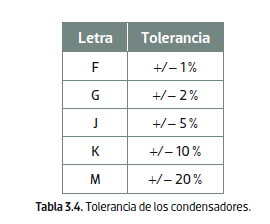
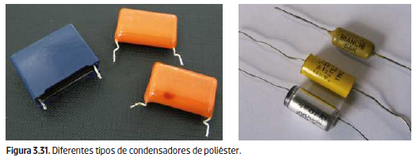
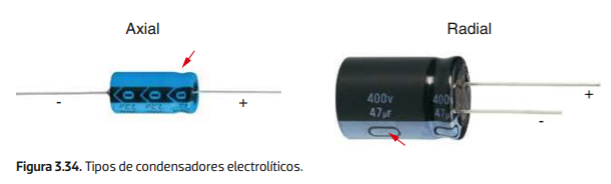

Condensadores (capacitores)
También denominados capacitores, son componentes pasivos que tienen la propiedad de almacenar energía. De esta forma, aprovechando su carga y su descarga, es posible utilizarlos en circuitos electrónicos para filtrar señales, acoplar circuitos, construir osciladores, etc.
Los condensadores están formados por dos láminas metálicas (armaduras), separadas por un elemento dieléctrico como puede ser el papel, el poliéster, un material cerámico, etc.

Las principales características eléctricas de los condensadores son su capacidad y su tensión de trabajo.
2.1. El valor de los condensadores
La capacidad del condensador se mide en faradios (F), no obstante, al ser una unidad muy grande, el valor de los condensadores siempre se da en submúltiplos del faradio como el microfaradio (μF), el nanofaradio (nF) y el picofaradio (pF). Dicho valor suele estar impreso en el mismo cuerpo de los condensadores, e igual que en las resistencias, puede estar codificado por un código de colores (casi en desuso) o por un código alfanumérico.
2.1.1. Identificación por código de colores
Se utilizan en condensadores con cinco bandas de colores. Las tres primeras se aplican de la misma forma que en las resistencias. Los dos primeros colores son los dos primeros dígitos, y el tercer color es el multiplicador. El valor de estos condensadores se obtiene en picofaradios (pF).

La cuarta banda de color corresponde a la tolerancia, y la quinta, y última, a la tensión de trabajo del condensador.
🎨 Calculadora Interactiva de Código de Colores (5 Bandas)
2.1.2. Identificación por código alfanumérico
En este caso, el valor del condensador, expresado en picofaradios, se muestra mediante tres cifras y una letra. Las dos primeras corresponden a las unidades y las decenas, el tercer número indica la cantidad de ceros que hay detrás de las dos primeras unidades, y la letra es la tolerancia. Véanse los siguientes ejemplos:
- ■ 473F = 47 000 pF +/– 1 %
- ■ 101K = 100 pF +/– 10 %
- ■ 224J = 220 000 pF +/– 5 %
- ■ 102M = 1 000 pF +/– 20 %
También existen otras formas de expresar el valor de la capacidad del condensador:
Ejemplo 1. En ocasiones no se expresan las unidades, simplemente se muestra un número decimal, cuyo valor viene dado en nanofaradios.
- ■ 0,047 = 47 nF ■ 0,68 = 68 nF
Ejemplo 2. Otras veces, el valor viene expresado mediante la letra k (de kilo). En este caso, k equivale a nF (nanofaradios).
- ■ 10 k = 10 nF ■ 22 k = 22 nF
Ejemplo 3. En otras ocasiones, la letra de las unidades se utiliza como separador de la parte entera y decimal.
- ■ μ1 = 100 nF ■ 4n7 = 4k7 = 4 700 pF

2.2. Tipos de condensadores
De igual forma que las resistencias, pueden tener valor fijo o variable. Así, los condensadores de valor fijo más utilizados son los que se enumeran a continuación:
De poliéster: no están polarizados y reciben su nombre por el tipo de material dieléctrico que se encuentra entre sus armaduras. Tienen forma plana o cilíndrica y su valor de capacidad suele ser inferior a 1 μF, aunque en aplicaciones especiales, como en los filtros de altavoces, etc., se pueden encontrar de mayor valor.

Cerámicos: también denominados de lenteja, son de pequeño tamaño, y el dieléctrico es de material cerámico. Se fabrican para valores de capacidad muy bajos, menores de 1 000 pF.
Condensadores SMD: también conocidos como condensadores multicapa, o condensadores «chip». Son componentes de un tamaño muy reducido, que no disponen de terminales, ya que se sueldan directamente en las pistas de las placas de circuito impreso mediante unos pequeños casquillos metálicos que tiene en sus extremos.
Electrolíticos: son condensadores cuyas armaduras están formadas por dos láminas de aluminio entre las que se ha insertado un papel impregnado en un líquido electrolítico. Estos condensadores están polarizados, por tanto, para su conexión es necesario respetar escrupulosamente su polaridad. Tienen forma cilíndrica y se fabrican para capacidades elevadas, superiores a 1 µF, pudiéndose encontrar incluso en valores superiores a 47 000 µF.
Pueden ser de dos tipos: axiales o radiales. Los axiales disponen de un terminal en cada una de las caras del cuerpo del condensador, y el terminal positivo se marca mediante una muesca en el cuerpo del condensador. Los de tipo radial tienen los terminales en la misma cara. El terminal negativo se distingue del positivo por una marca estampada en su envoltura. Cuando el condensador está sin usar, el terminal positivo es más largo que el negativo.

Además de la capacidad, otra característica importante del condensador electrolítico es su tensión de trabajo. En ningún caso se sustituirá un condensador con una tensión menor que la que requiere el circuito en el que trabaja, ya que se destruiría.
Supercondensadores: son condensadores electroquímicos polarizados, con valores de capacidad muy altos (superiores al faradio), y un tamaño muy reducido. Su valor puede ser cientos de veces superior a los electrolíticos.
Condensadores de tantalio: también conocidos como condensadores de gota, son una variante de los condensadores electrolíticos, con la diferencia de que, para la construcción de sus armaduras, utilizan tantalio en lugar de aluminio. Están polarizados y se fabrican para valores de capacidad entre 0,1 µF y 100 µF.
Condensadores ajustables: son condensadores que permiten variar su valor de forma manual, bien por un mando o un ajuste basado en tornillo (trimmer).

2.3. Asociación de condensadores
Al igual que las resistencias, los condensadores se pueden asociar en serie o en paralelo.
2.3.1. Condensadores en paralelo
El valor de un grupo de condensadores en paralelo es equivalente a sustituir dicho grupo por un único condensador que coincide con el resultado de la suma del valor capacitivo de cada uno de ellos.

2.3.2. Condensadores en serie
La capacidad equivalente de un circuito de condensadores en serie es la inversa de la suma de las inversas de cada uno de los condensadores.

Si los condensadores están polarizados, como es el caso de los de tipo electrolítico, se debe tener en cuenta la polaridad de los terminales, según se muestra en la figura.